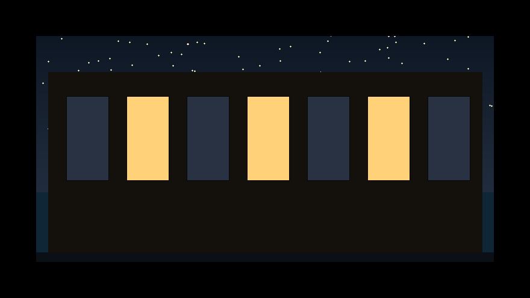

Seven lit windows
عمارة بسبع نوافذ. في 30 ثانية اختر 3 ومن أين تبدأ. عازف وطفل وطائرة ورقية تمر لاحقاً. «ليلتي من 3 نوافذ».
Pick 3 windows + start. Plane passes another window later. Catch-up UI included.
ادخل مشهدًا ≈ 4 د
اختر 3 ثم ابدأ من واحدة